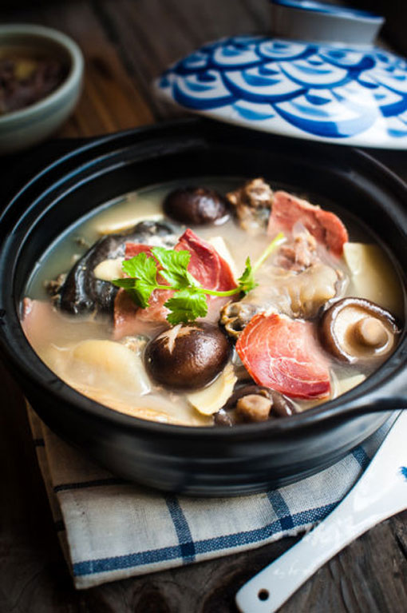

火腿炖甲鱼
火腿炖甲鱼是徽菜中的滋补佳品，选用徽州火腿和野生甲鱼，汤色乳白，味道鲜美，营养丰富。 这道菜体现了徽菜"重火功、重原味"的特点，火腿的咸香与甲鱼的鲜美完美融合，是一道兼具美味与养生价值的传统名菜。
咸鲜醇厚
汤白味美
营养丰富
滋补养生
辣度:
30
准备时间(分钟)
120
烹饪时间(分钟)
4-6
份量(人)
营养与功效
火腿炖甲鱼是一道营养价值极高的滋补菜品。甲鱼富含优质蛋白质、多种维生素和微量元素，具有滋阴补肾、清热凉血的功效。火腿则提供了丰富的氨基酸和独特风味。这道菜适合体质虚弱、需要滋补的人群食用，尤其在秋冬季节食用效果更佳。
主要食材
- 甲鱼 1只(约750克)
- 徽州火腿 150克
- 姜片 5片
- 料酒 3汤匙
- 枸杞 15克
- 红枣 6颗
- 葱段 2根
- 盐 适量
- 白胡椒粉 少许
- 清水 适量
营养成分（每100克）
- 热量：98千卡
- 蛋白质：16.2克
- 脂肪：3.5克
- 碳水化合物：1.8克
- 钙：65毫克
- 铁：2.2毫克
- 锌：1.8毫克
- 维生素A：120IU
- 钠：380毫克
详细做法步骤
- 将甲鱼处理干净，去除内脏和油脂，用开水烫一下，刮去表面的黑膜，然后清洗干净。
- 将甲鱼切成适当大小的块状，火腿切成厚片，姜切片，葱切段备用。
- 将甲鱼块放入冷水锅中，加入1汤匙料酒和2片姜，大火煮开后焯水2分钟，捞出用清水冲洗干净。
- 取一个砂锅，放入焯好水的甲鱼块、火腿片、剩余的姜片和葱段。
- 加入足够的清水，水量要没过所有食材，再加入2汤匙料酒。
- 大火烧开后，用勺子撇去表面的浮沫，然后转小火慢炖。
- 炖煮1.5小时后，加入洗净的枸杞和红枣，继续炖煮30分钟。
- 炖至甲鱼肉质酥烂，汤色乳白，根据个人口味加入适量盐调味。
- 最后撒上少许白胡椒粉提鲜，即可关火。
- 将炖好的火腿甲鱼汤盛入汤碗中，趁热食用。
烹饪小贴士
- 选择活甲鱼制作，口感更鲜美，营养价值更高
- 甲鱼表面的黑膜一定要去除干净，否则会有腥味
- 火腿本身有咸味，加盐时要先尝味再决定用量
- 使用砂锅慢炖能使汤汁更加醇厚，食材味道更好地融合
- 炖煮过程中要保持小火，让汤汁保持微沸状态即可
- 枸杞和红枣不宜过早加入，以免炖煮过久失去营养
- 甲鱼的裙边富含胶原蛋白，是整道菜的精华部分
- 如果喜欢更浓郁的口感，可以适当延长炖煮时间
历史与文化
火腿炖甲鱼是徽菜中的传统名菜，历史悠久。徽州地区多山，盛产各种山珍野味，而火腿则是徽州著名的腌制食品。将本地的火腿与甲鱼相结合，形成了这道具有地方特色的滋补佳肴。
在古徽州，这道菜通常是宴请贵客或重要节日的菜肴，体现了徽州人待客的热情和对饮食的讲究。如今，火腿炖甲鱼已成为徽菜的代表作之一，深受食客喜爱。
食用建议
火腿炖甲鱼最适合在秋冬季节食用，有很好的滋补作用。建议作为主菜食用，搭配米饭和清淡的蔬菜。
食用时可以先品尝原汤的鲜美，然后再食用甲鱼肉和火腿。甲鱼的裙边胶质丰富，口感滑嫩，是整道菜的精华。
由于甲鱼和火腿都较为滋补，建议适量食用，尤其是体质偏热的人群不宜过量。
变化与创新
传统的火腿炖甲鱼以清炖为主，但随着饮食文化的发展，也出现了一些创新做法：
- 药膳甲鱼汤：加入当归、黄芪等中药材，增强滋补功效
- 甲鱼火锅：以甲鱼汤为锅底，涮食各种食材
- 红烧甲鱼：加入酱油、糖等调料红烧，味道更加浓郁
- 甲鱼粥：将甲鱼肉与米同煮，制成滋补粥品
- 甲鱼蒸蛋：甲鱼肉与鸡蛋一起蒸制，口感滑嫩